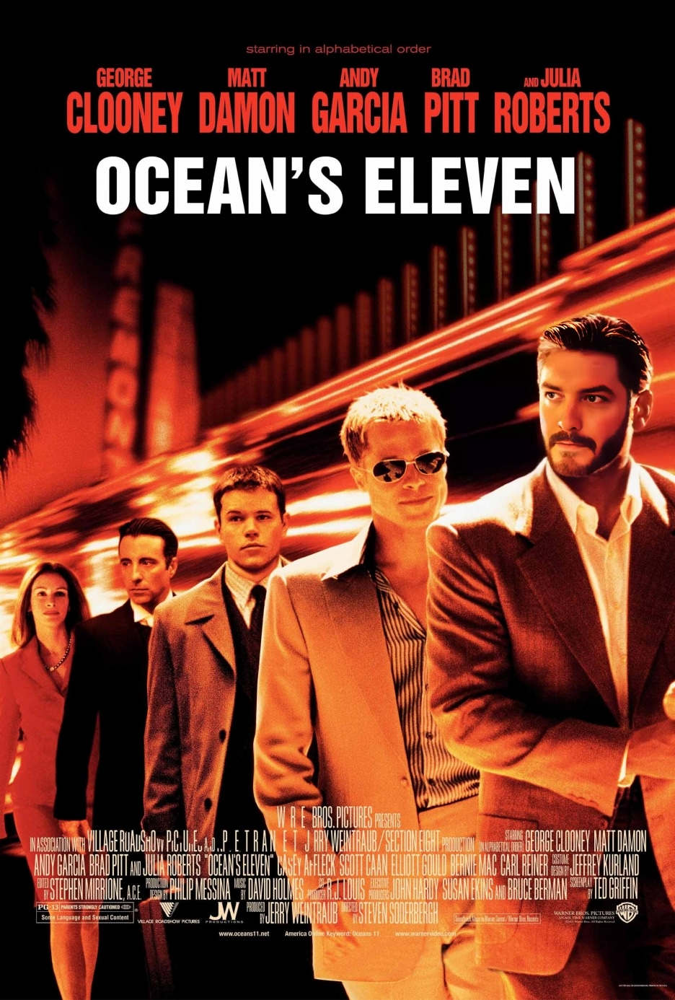

| Размер награды | w | one_in_w | l | one_in_l |
|---|---|---|---|---|
| 0 | 30.3% | 3 | 49.4% | 2 |
| 5 | 11.4% | 9 | 19.7% | 5 |
| 10 | 37.9% | 3 | 19.7% | 5 |
| 20 | 19.0% | 5 | 9.9% | 10 |
| 100 | 1.0% | 101 | 1.0% | 101 |
| 1000 | 0.4% | 264 | 0.3% | 338 |
CSR
CSR (Casino Strategies Report)

What is this about
- Code As Much As You Can (functional code and tidyverse style where is possible). A little bit of OOP with R6 classes.
- Game simulation and data wrangling.
- Creating different gaming strategies using common sense and statistics.
- Finding best strategy backed by statistics. (monte carlo + estimation).
- Data Visualization of metrics by different strategies using ggplot2.
- Results presentations with Quarto.
- Project management using git, GitHub, renv.
Casino Rules
- Всего 10 автоматов.
- Из них 9 автоматов имеют матожидание выигрыша ниже цены игры.
- Только один позволяет получить достоверную прибыль игроку в долгосрочной перспективе.
- Но победный автомат может быть изменен после 500 игр для защиты от абьюза данного автомата.
Basic statistics
- Всего машин: 10.
- Цена игры: 10 денег.
- У проигрышных машин матожидание выигрыша 8.88.
- У выигрышной машины матожидание выигрыша 12.94.
- При рандомной стратегии матожидание выигрыша: 9.29.
- Матожидание выигрыша других стратегий будем оценивать через симуляции.
- В одной итерации 1000 игр.
- Для оценки и визуализации каждая стратегия проходила 50 итераций.
Примененная статистика
- Метод Монте-Карло для симуляций
- T-test для оценки среднего
- Test \(\chi^2\) для сравнения частот дискретных распределений
- Z-test для оценки пропорции
Strategies
- Randy 🤪
- Randomly pulls machine at every moment
- Hate-to-lose man 😎
- Has 10 patience points.
- Every lose costs 1-2 patience points.
- Win restores patience points.
- If patience is depleted player jumps to another random machine.
- T-man 🍵
- Builds for every machine confidence interval of expected value using T-test
- At every step chooses a random machine with weights - lower boundary of CI.
- Keeps last 50 games for every machine, so he will adapt to change of winning machine.
- Conservative player 🧱
- Collects winning history from every machine.
- Finds proportion of every event and takes lower boundary using Z test for proportions.
- Plays a machine with higher expected value (how is so?).
- Son of a casino designer 🤡
- Knows true distributions of winning and losing machines.
- Plays at least 10 times at every machine. Keep history of 100 games.
- Uses \(\chi^2\) test for comparing current distribution of machine to the know distributions.
- Plays in a particular machine, until the machine is likely to be losing. Then moves to the next one on the right.
Потенциальный выигрыш
Visualization of strategies
Вставить графики из plots.R. (А где обрабатывать данные? Думаю, там же. Хотя бы первоначально.)
Best strategy
Оценить матожидание
Conclusions
- You will never win in a real casino
- Statistics is useful
- Simulations are fun and cheap
- Write as many functions as possible. I have 41, actually.